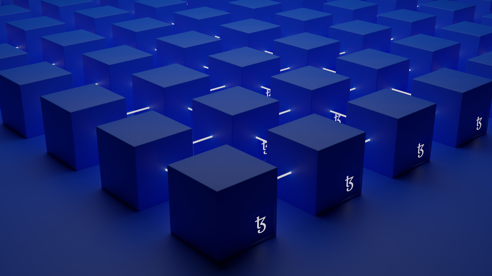

블록체인이란?
블록체인은 암호화 기술을 이용하여 중앙시스템(서버) 없이도 작동되어지는 보안기술입니다. 사토시 나카모토의 비트코인 백서를 통해 처음 세상에 나온 이 기술은 많은 관심을 받게되었습니다. 본래 화폐시스템을 위해 설계되어진 비트코인은 그 화폐의 기능보다 기술적 측면이 더욱 각광받기 시작하면서 2015년 7월 30일 비탈릭 부테린의 이더리움 네트워크 공개와 동시에, 기술의 개념 및 명칭을 '블록체인' 이라고 부르게 되었습니다.  2022년기준 블록체인은 차세대 보안기술로서 다양한 서비스와 연동되고있으며 2018년 대한민국 정부의 차세대 핵심 기술 중 하나로 부상하고있습니다. 암호화폐, 블록체인, 스마트컨트랙트 등 한가지 기술을 통해 여러 측면의 서비스를 융합할수도 있습니다.
하지만 안타까운 것은, 블록체인의 기초지식 조차없이 마케팅 혹은 악행으로 이어진다는 것입니다. 이러한 여파로, 비트코인, 가상화폐 등 블록체인 기술의 사회적 인식은 부정적입니다. 왜 암호화폐가 존재하고 사토시 나카모토는 왜 비트코인을 만들었으며 블록체인의 가치는 무엇인지 돌이켜봐야합니다. 사람의 욕심은 끝이 없습니다. 물론 블로체인의 성장과 확장성을 위한 노력은 지속되야 하지만, 근본적인 철학을 잃어버린 다면,